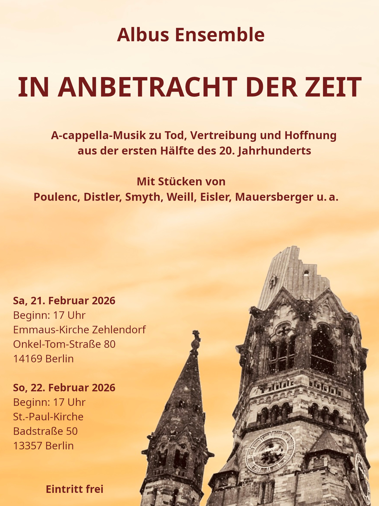
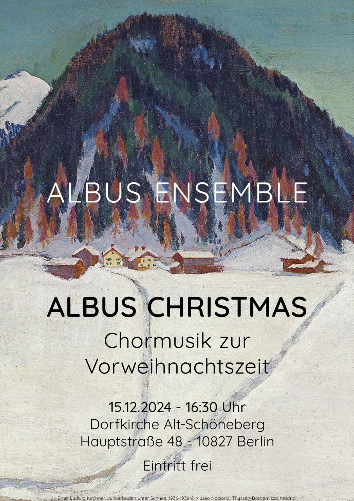

Vergangene Konzerte
Februar 2026
"In Anbetracht der Zeit" - Vokalmusik aus der ersten Hälfte des 20. Jahrhunderts
Zeiten kommen, Zeiten gehen - und doch möchte man so manche Zeitenwende gern verdrängen, verhindern oder gar überspringen. Das aktuelle Winterprojekt des Albus Ensembles ist ein Konzertprogramm aus Werken der ersten Hälfte des 20. Jahrhunderts.
Auch zu früheren Zeiten gab es große Krisen und Umwälzungen. Mit Musik von Francis Poulenc, Frank Bridge und Rudolf Mauersberger wurde hörbar, wie Komponisten verschiedener Länder Trauer um Verlorenes ausdrücken und dem Leid ihrer Zeit eine Stimme geben.

Juni 2025
"Psalmdudler" - Protestantische, katholische und jüdische Psalmvertonungen der Renaissance und des Frühbarock
Seit ihrer Entstehung vor über 2000 Jahren wurden die 150 Psalmen der Bibel gebetet, gesungen und auf unterschiedlichste Weise vertont. Diese Texte verbinden Jüd:innen und Chr[...]
Freuen Sie sich auf eine mehrchörige Motette von Heinrich Sch��tz, die von seinem Venedig-Aufenthalt inspiriert ist, auf einen der berühmten Bußpsalmen von Orlando di Lasso, der[...]

Dezember 2024
"Albus Christmas" - Chormusik zur Vorweihnachtszeit
Draußen ist es kalt, nass und dunkel? We're dreaming of an Albus Christmas und erhellen Eure und unsere Adventszeit mit alter und neuer Musik von Cecilia McDowall, William Byrd[...]

Juni 2024
"Who run the world" - Tausend Jahre weibliche Vokalmusik
Vom Mittelalter bis zur Gegenwart haben zahlreiche talentierte Frauen die Musikwelt mit ihren Werken bereichert, standen meist jedoch im Schatten ihrer männlichen Kollegen. Mit dem[...]
Dabei wird nicht nur Vokalmusik bekannter Komponistinnen wie Hildegard von Bingen, Clara Schumann oder Fanny Mendelssohn zu hören sein - auch unbekanntere Vertreterinnen ihrer Zunft w[...]
Das Albus Ensemble freut sich auf alle, die gemeinsam mit ihm die musikalischen Schätze ergründen wollen, die diese Frauen hervorgebracht haben. Denn wie schon Beyoncé - eine andere[...]